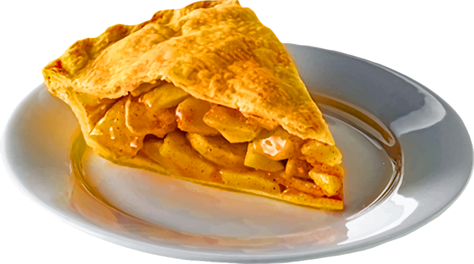

Apple Pie Recipe

Description
This apple pie recipe is the best I've ever made. The secret is I
used Granny Smith apples. The apples are not as sweet as some, which
makes them good for pie. Granny Smiths are also really tart and help
maintain the consistency of the filling.
Ingredients
Crust
Filling
- 6 cups thinly sliced, peeled apples (6 medium)
- 3/4 cups sugar
- 2 tablespoons all-purpose flour
- 3/4 teaspoon ground cinnamon
- 1/4 teaspoon salt
- 1/8 teaspoon ground nutmeg
- 1 tablespoon lemon juice
Steps
- Heat oven to 425°F. Place 1 pie crust in ungreased 9-inch glass
pie plate. Press firmly against side and bottom.
- In large bowl, gently mix filling ingredients; spoon into
crust-lined pie plate. Top with second crust. Wrap excess top
crust under bottom crust edge, pressing edges together to seal;
flute. Cut slits or shapes in several places in top crust.
- Bake 40 to 45 minutes or until apples are tender and crust is
golden brown. Cover edge of crust with 2- to 3-inch wide strips
of foil after first 15 to 20 minutes of baking to prevent
excessive browning. Cool on cooling rack at least 2 hours before
serving.